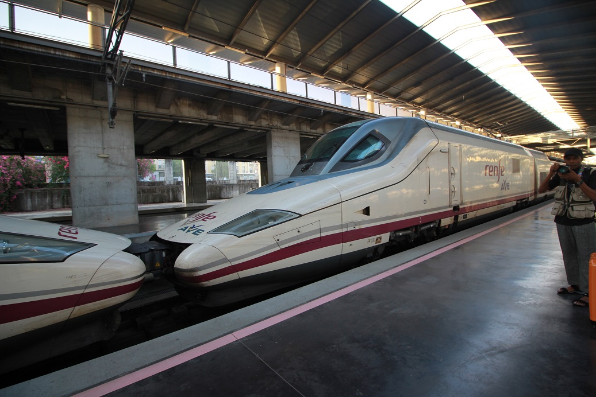

| 1 | : | Del 14 al 24 de septiembre de 2019 viajamos a España con mi amiga Kanako y su esposo Richard. |
| 2 | : | John había trabajado por diez años y recibió unas vacaciones especiales que se llaman vacaciones de alivio, ese año. |
| 3 | : | No podíamos decidir si ir a España o Botswana en África. |
| 4 | : | Sin embargo, en abril cuando almorzamos con mi amiga Kanako, la situación cambió. |
| 5 | : | Su esposo Richard, estuvo en Las Vegas, Estados Unidos. |
| 6 | : | Pero Kanako tuvo que estar en Japón por un problema de herencia de su familia japonesa. |
| 7 | : | Durante casi dos años, estuvo separada de Richard para resolver el terrible problema y ella estaba, mentalmente, muy cansada. |
| 8 | : | John y yo creíamos que sería mejor que ella hiciera algo divertido y los invitamos a viajar. |
| 9 | : | Kanako y Richard quisieron hacer el viaje con nosotros y les hicimos elegir el destino. |
| 10 | : | Para ellos, fue el primer viaje al extranjero en veinte años y nunca habían estado en Europa. |
| 11 | : | Ir a África habría sido demasiado avanzado para turistas sin experiencia por eso eligieron España. |
| 12 | : | También, nosotros lo aprobamos porque habíamos aprendido español durante dos años y medio y sería una buena oportunidad para saber de nuestra capacidad hablando español. |
| 13 | : | Kanako regresó a Estados Unidos en abril y utilizamos la aplicación que se llama Line para conectarnos. |
| 14 | : | Primero compramos los boletos de avión en el mismo horario las dos. |
| 15 | : | Nosotros compramos los boletos de Tokio a Madrid, de Granada a Barcelona y de Barcelona a Tokio. |
| 16 | : | Elegimos unos hoteles que serían convenientes para hacer turismo juntos y reservamos los mismos hoteles, desde Estados Unidos y desde Japón. |
| 17 | : | Tuvimos que reservar las atracciones turísticas populares como la Sagrada Familia y el Palacio de la Alhambra, unos meses antes. |
| 18 | : | Kanako reservó un tour con guía para cuatro personas en la Sagrada Familia. |
| 19 | : | El tour costó €32.00 por persona. |
| 20 | : | Y reservamos un tour con guía para cuatro personas en la Alhambra. |
| 21 | : | El tour costó €65.00 por persona. |
| 22 | : | También reservamos una excursión de un día que va de Barcelona a Girona y Figueres, para cuatro personas, para ir al museo de Salvador Dalí. |
| 23 | : | El tour costó €80.00 por persona. |
| 24 | : | Decidimos rentar un coche para movernos en Andalucía y Richard reservó un coche de alquiler. |
| 25 | : | Compramos cuatro billetes de tren AVE de Madrid a Córdova. （ → Renfe） |
| 26 | : | El asiento fue de clase preferencial, de primera clase, que se llama Mesa, y hasta cuatro personas pueden sentarse alrededor de una mesa. |
| 27 | : | Si un grupo de 4 personas compra sus billetes, el precio de un billete es de €42.25 y es más barato que el billete de clase turística, de segunda clase. |
| 28 | : | Creímos que internet era muy útil porque podíamos conectarnos rápidamente entre Estados Unidos y Japón. |
| 29 | : | Pero estaba un poco preocupada porque no sabía si ese plan funcionaría o no, sin embargo el viaje fue perfecto, más de lo que esperaba. |
| 30 | : | El viaje fue por casi 10 días pero hicimos tantas cosas, por eso el tamaño de este diario será como de meses, no de diez días. |
| 31 | : | Significa que el diario va a ser largo. |
| 32 | : | Ojalá que yo pueda terminar de escribirlo este año. |